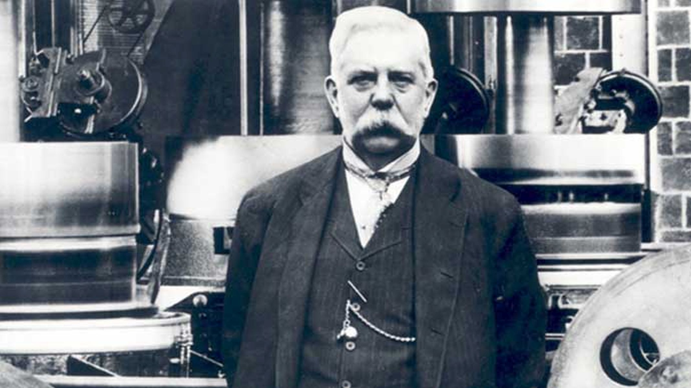

<link rel="stylesheet" href="css/styles.css">
<main id="main">
  <title id="title">George Westinghouse</title>
  <div id="tribute-name">
      <h1>George Westinghouse</h1>
      <h2>The Forgotten Hero</h2>
    </div>
  <figure id="img-div">
    
    <figcaption id="img-caption">George Westinghouse: The forgotten hero who laid the foundation of todays electricity.</figcaption>
  </figure>
  <div id="tribute-info">
    <ul>
      <li><strong>1846</strong> - Born in the Central Bridge, New York</li>
      <li><strong>1867</strong> - Westinghouse met and soon married Marguerite Erskine Walker. They were married for 47 years.</li>
      <li><strong>1869</strong> - Invented a railroad braking system using compressed air</li>
      <li><strong>1881</strong> - George Westinghouse inaugurated the first Saturday half holiday in his Pittsburgh factory</li>
      <li><strong>1886</strong> - Westinghouse formed the "Westinghouse Electric & Manufacturing Company"</li>
      <li><strong>1893</strong> - George Westinghouse won the bid to light the 1893 World's Columbian Exposition in Chicago with alternating current, slightly underbidding General Electric to get the contract.</li>
      <li><strong>1914</strong> - Dies at the age of 67</li>
    </ul>
  </div>
  <strong id="footer-text">If you have time, you should read more about this incredible human being on his <a href="https://en.wikipedia.org/wiki/George_Westinghouse" target="_blank" id="tribute-link">Wikipedia entry.</a>
  </strong>
</main>